Hiding in Plain Sight: On-the-Fly Evasion Methodologies, Iterative Weaponization, and Bypassing Modern Detection
September 25, 2026
Contributors: KBS (admin@dtrh.net) • DTRHnet Research • Workada Research Monitor Group
Scope
Everything documented in this was performed against software in strictly controlled research environments: isolated virtual machines (VirtualBox host-only networking on 192.168.86.0/24), synthetic evaluation accounts, ephemeral test pages, non-intrusive memory hooks, and immutable evidence chains. Neither project is intended for covert monitoring, surveillance circumvention, credential theft, or unauthorized access. Both projects share a foundational engineering ethos: an observed API call is evidence of a call, not proof of a completed operation. We document methodologies, failure modes, telemetry seams, and architectural invariants so that systems engineers, security researchers, and enterprise defenders can reason rigorously about modern detection surfaces.
Summary
Modern telemetry systems—whether deployed as enterprise endpoint detection and response (EDR) platforms, in-browser fraud detection engines, anti-scraping sentinels, or user-behavior analytics (UBA) agents—rely on a coherent set of assumptions: automated or unauthorized execution inevitably manifests as observable process anomalies, memory-allocation footprints, uncharacteristic call stacks, state mutations, and non-human timing profiles. When software engineers attempt to automate human-in-the-loop workflows across monitored platforms (such as high-throughput AI data-annotation ecosystems like Multimango and Workada), conventional automation architectures predictably fail. They trip client-side DOM mutation sensors, exhaust browser memory by dragging dense binary payloads across execution contexts, trigger behavioral rate-limiting through inhuman typing velocities, or catastrophically desynchronize when asynchronous single-page applications (SPAs) mutate state underneath them.
This whitepaper provides an exhaustive technical post-mortem and architectural breakdown of MfYRE (Task Exporter v1.7.0) and its autonomous desktop control supervisor, MfYREpro. Conceived initially as an observation-only Manifest V3 browser extension, MfYRE evolved into a globally distributed, asynchronous pipeline spanning isolated Windows virtual machines, Chromium Developer Protocol (CDP) sockets, pure in-memory PKZIP binary synthesis, ephemeral GitHub Actions workers, multi-provider multimodal vision LLM adapters, and a stateful Linux-side finite-state machine (FSM).
Crucially, this architecture demonstrates that the most resilient method of evading defensive telemetry is not to deploy aggressive "stealth" hooks, API hooking unhooks, or heuristic obfuscators, but to radically shrink the observable footprint: decouple the capture plane from the analysis plane, enforce strict observation-only guarantees on host DOMs, store zero persistent credentials on disk, mandate fail-closed verification primitives, and treat every transition as unsafe until mathematically and contextually verified.
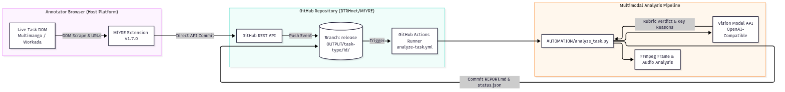
Figure 1.1: High-Level End-to-End Task Observation & Adjudication Pipeline
Part I — Genesis, Concept & Architecture
1.1 From Browser-Side Capture to a Distributed Analysis Pipeline
MfYRE began as a specialized browser extension designed to extract human-in-the-loop (RLHF / RLAIF) data-annotation workload context directly from the client side. In these environments, annotators are tasked with evaluating paired multimodal generative model outputs (Text-to-Image, Text-to-Video, Image-to-Video, Realism HC Elo) against multifaceted, hundreds-of-words quality rubrics. The manual evaluation workflow is burdened by cognitive fatigue, subjective inconsistency, and strict timer constraints.
The original engineering goal was simple: capture the prompts, author briefs, instructions, task metadata, and associated media references already present within the active browser session, package that context, and adjudicate it using frontier multimodal vision models without interrupting the user.
However, the capture layer was deliberately architected with a non-negotiable security invariant: the browser must be treated purely as a transient collection edge, never an execution or analysis plane. Turning the browser into an evaluation platform introduces unacceptable security, operational, and forensic liabilities:
- Host Memory & Performance Bloat: Running heavy multimodal decoding, image preprocessing, or LLM inference loops inside the host browser degrades tab performance, induces UI freezing, and triggers browser crash handlers.
- Detection & Behavioral Profiling: Advanced client-side JavaScript sensors monitor DOM mutations, layout reflows, garbage collection pauses, and execution timings. Injecting heavy analytical workloads into the host page context creates massive, easily detectable behavioral anomalies.
- Forensic Hygiene & Ephemeral Footprints: Writing intermediate task files, raw base64 strings, or model tokens to local workstation disk leaves persistent artifacts that compromise operational security and clutter host storage.
The earliest prototype (Manifest V3 commit ce46289, August 23, 2026) followed a straightforward, browser-centric model: the extension inspected the visible task surface, extracted text and media elements, constructed an in-memory archive, and attempted to hand the collected material to an external agent service.
The initial implementation immediately exposed a fundamental architectural flaw at the boundary between the browser runtime and the external agent service. The early integration with Manus (https://manus.im/app/...) attempted to bridge the authenticated browser session with an external agent workflow. As captured in forensic logs (LOGS/agent_task_browser_diagnosis_2026-08-23.md), opening workflow-created task URLs inside the browser redirected to generic authentication dashboards rather than displaying the private task surface. The session environment—its cookies, origin security boundaries, and authorization contexts—was completely isolated from the developer-facing API surface. Furthermore, passing developer credentials or relying on agent-driven browser replication introduced severe fragility: ephemeral CI runners masked or invalidated developer API keys, while upstream authentication state drifted continuously.
This failure solidified the foundational doctrine of the project:
Architecture Axiom 1: The browser should be the capture edge, not the analysis plane.
The browser should perform only the minimal, lightweight operations necessary to snapshot the visible task state. All storage, compute, keyframe extraction, and multimodal adjudication must be cleanly decoupled and handed off out-of-band.
1.2 The Architectural Pivot: Commit eb5a6bb and Multi-Tier Decoupling
Commit eb5a6bb permanently severed the browser from the external agent paradigm, replacing it with a direct, stateless model adapter layer (AUTOMATION/model_api.py) interfacing with OpenAI-compatible vision endpoints. Instead of attempting to reproduce or persist complex browser-session state, MfYRE established a clean, four-subsystem distributed topology.
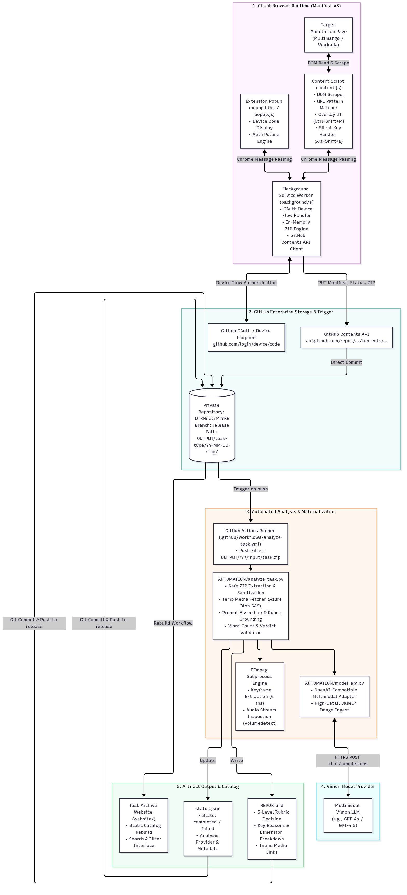
Figure 2.1: Distributed System Architecture and Multi-Tier Flow
This decoupled architecture establishes rigid operational boundaries across seven distinct layers:
| Subsystem | Execution Context | Core Function | Security & Telemetry Boundary |
|---|---|---|---|
| Capture Layer | Windows Chromium / Edge | DOM extraction, URL resolution | Zero form/button mutation; zero local disk I/O; read-only DOM scraping. |
| Ingress Transport | Service Worker (background.js) |
PKZIP assembly, GitHub REST API client | Pure in-memory array buffers; OAuth tokens confined to session RAM. |
| Storage & Trigger | GitHub Private Repository | Append-only event and artifact store | Granular GitHub App token (Contents: Read & write); branch isolation (release3). |
| Processing Worker | Ephemeral GitHub Actions Runner | Media download, FFmpeg slicing, LLM call | Disposable runner; repository secrets (MODEL_API_KEY) masked and never exposed to client. |
| Multimodal Intelligence | External LLM Provider APIs | Rubric-grounded evaluation & verification | Stateless JSON completion calls over TLS 1.3; provider-agnostic fallback. |
| Observation Monitor | Linux Host (tmux daemon) |
Repository polling, TUI rendering, timer tracking | Out-of-band monitoring; non-intrusive Git polling every 3 seconds. |
| Autonomous Controller | MfYREpro Supervisor (live_loop/) |
Task validation, FSM state enforcement, CDP input | Fail-closed invariants; strict task-identity verification; paced typing policies. |
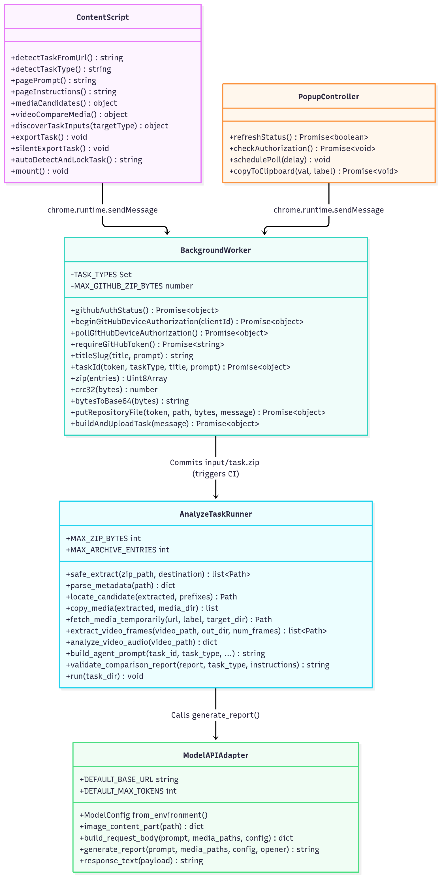
Figure 2.2: Detailed Module Class & Interface Structure
Part II — Weaponization & On-The-Fly Methodologies
2.1 Pure In-Memory Binary ZIP Packaging
Standard browser-based automation tools and extensions that handle file archiving typically import third-party libraries (such as JSZip) or rely on the browser's download manager (chrome.downloads.download()). Both approaches represent critical security vulnerabilities:
* Heavy external third-party libraries introduce complex dependency trees, prototype-pollution risks, and bundle bloat that conflicts with Manifest V3’s strict ban on remotely hosted code.
* Leveraging chrome.downloads forces the payload onto the local physical drive (typically C:\Users\<user>\Downloads\), creating immediate forensic file-system artifacts (USN Journal entries, Master File Table records, Windows Amcache/Prefetch logs) and prompting anti-malware or security scanners to inspect the archive.
To eliminate this disk footprint, I implemented a standalone, zero-dependency, in-memory PKZIP 2.0 binary synthesis engine directly inside EXTENSION/taskexporter/background.js using native typed array buffers (Uint8Array, DataView).
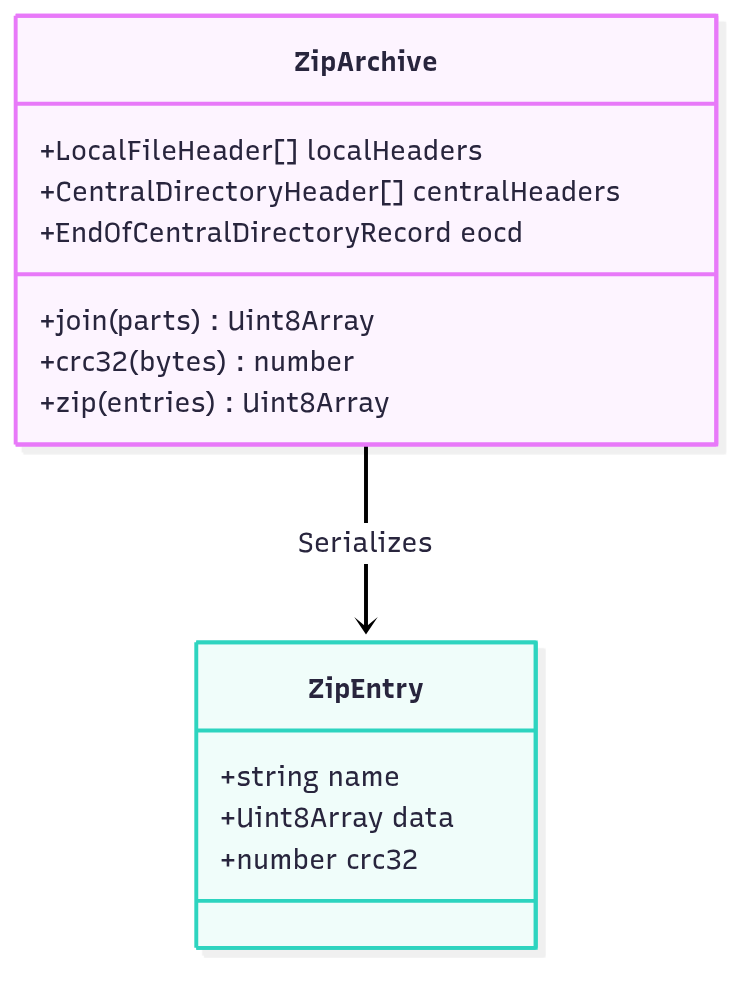
Figure 5.2: In-Memory PKZIP Class & Stream Serialization Model
Technical Mechanics of the In-Memory ZIP Encoder
The PKZIP format specification mandates a specific binary layout consisting of Local File Headers, file payloads, Central Directory Records, and an End of Central Directory (EOCD) record. The background service worker constructs these byte-for-byte in memory:
-
Local File Header Structure (
0x04034b50):
For each file entry (prompt.txt,metadata.txt,INSTRUCTIONS.md, and media reference manifests), a 30-byte header is synthesized: * Bytes 0–3: Signature0x04034b50(Little Endian:0x50, 0x4b, 0x03, 0x04). * Bytes 4–5: Minimum version required to extract (0x0014= 2.0). * Bytes 6–7: General purpose bit flag (0x0000). * Bytes 8–9: Compression method (0x0000= Stored / Uncompressed). * Bytes 10–13: MS-DOS format file modification time and date. * Bytes 14–17: 32-bit CRC-32 checksum computed across the uncompressed payload. * Bytes 18–25: Compressed and uncompressed size (identical under Method 0). * Bytes 26–29: Filename byte length and extra field length (0x0000). -
IEEE 802.3 Cyclic Redundancy Check (CRC-32):
The engine implements an optimized, bitwise polynomial calculation: $$\text{CRC-32 Polynomial} = \mathtt{0xEDB88320}$$ Every byte passes through a pre-computed or dynamically shifted register to generate the exact 32-bit integer expected by standard unpackers, preventing archive corruption errors on downstream extractors. -
Central Directory Record (
0x02014b50) & EOCD (0x06054b50):
After serializing all file entries, the central directory table is written, encoding the relative memory offset of each Local File Header. Finally, the 22-byte EOCD record is appended, sealing the total record count and directory offsets. -
Call-Stack Safe Base64 Serialization:
To transmit the binary archive via GitHub's JSON REST API, theUint8Arraymust be converted to a Base64 string. A naïve implementation usingbtoa(String.fromCharCode(...bytes))immediately throws aRangeError: Maximum call stack size exceededin V8 when processing payloads over 64 KB. MfYRE implements a chunked sliding-window buffer that slices the byte array into 32 KB (0x8000) segments:
function bytesToBase64(bytes) {
let binary = '';
const chunkSize = 0x8000; // 32KB chunk limit
for (let i = 0; i < bytes.length; i += chunkSize) {
binary += String.fromCharCode.apply(null, bytes.subarray(i, i + chunkSize));
}
return btoa(binary);
}
The entire packaging lifecycle executes in under 12 milliseconds, consumes negligible RAM, writes zero bytes to the host filesystem, and produces an RFC-compliant ZIP binary directly in the service worker runtime.
2.2 Media Handling: The URL-Reference Manifest Architecture
In the early design phase (v1.0.0 – v1.4.0), MfYRE attempted to fetch candidate images and video streams directly within the browser, converting media blobs into base64 strings or packing binary blobs directly into input/task.zip.
This approach collided with hard platform constraints:
* Memory Exhaustion: High-definition video streams and 4K image comparisons on Multimango or Workada frequently exceed 150 MB per task. Storing multiple video blobs in browser RAM caused service worker termination and renderer crashes.
* API Transfer Ceilings: The GitHub Contents API enforces a hard request payload ceiling: single files committed via PUT /repos/.../contents/... cannot exceed 24 MB (github.max_archive_bytes = 25165824). Attempting to commit dense binary media failed with 413 Payload Too Large or 422 Unprocessable Entity.
* Git Repository Bloat: Committing hundreds of megabytes of binary media directly into the Git commit tree rapidly inflated repository size, severely degrading clone and fetch performance on CI runners.
The v1.7.0 URL-Reference Paradigm
Introduced in Version 1.7.0, MfYRE transitioned to an asynchronous URL-Reference Manifest Architecture. Instead of carrying the heavy binary media through the browser upload path, the content script extracts the authenticated content delivery network (CDN) URLs and signed Azure Blob Storage Shared Access Signature (SAS) tokens directly from the DOM:
input/task.zip
├── prompt.txt
├── metadata.txt
├── INSTRUCTIONS.md
├── image_a_url.txt
└── image_b_url.txt
By extracting and persisting only the signed SAS URLs:
1. The exported task.zip payload shrinks by over 99.9%, dropping from ~150 MB down to an ultra-lightweight 15 KB to 25 KB.
2. Browser memory consumption drops to near zero, permitting instant exports regardless of media resolution.
3. The upload completes over the GitHub Contents API in milliseconds, completely bypassing the 24 MB ceiling.
Ephemeral SAS Lifetimes & Extraction Timing
Azure Blob SAS tokens grant temporary read permissions via cryptographically signed query parameters (?sv=2021-08-06&se=...&sr=b&sp=r&sig=...). Crucially, these tokens carry strict expiration windows—typically 15 to 60 minutes.
This created a specific operational requirement: the GitHub Actions runner must materialize the remote media within minutes of task export. If an operator attempts to re-run analysis days later via workflow_dispatch, the SAS token returns HTTP 403 Forbidden. The system detects this condition explicitly in AUTOMATION/analyze_task.py, failing gracefully with:
HTTP 403 Forbidden: Signed SAS token expired before media fetch.
Task must be re-exported from active browser session.
2.3 External Media Processing: FFmpeg Multimodal Slicing
Once the ephemeral GitHub Actions runner receives task.zip and fetches the remote media streams, the heavy computational work of video and audio transformation is executed entirely out-of-band using FFmpeg.
Multimodal vision LLMs cannot ingest raw H.264/HEVC video containers or continuous MP4 streams directly; they require discrete, high-fidelity visual representations and structured audio characteristics. AUTOMATION/analyze_task.py orchestrates two specialized FFmpeg pipelines:
1. Chronological Motion Slicing (Visual Dynamics)
To evaluate video comparison tasks (text-to-video-compare, text-to-video-ranking, image-to-video-ranking), the runner captures 6 sharp, chronologically distributed keyframes scaled to a standardized resolution:
ffmpeg -v error -i candidate_video.mp4 -vf "fps=1,scale='min(720,iw)':-2" -vframes 6 -q:v 2 keyframes/frame_%02d.jpg
- Framerate & Scaling: Slices at 1 fps while dynamically downscaling the width to a maximum of 720 pixels (preserving aspect ratio with
-2). This suppresses high-frequency encoding noise while keeping the token footprint within optimal vision model attention limits. - Temporal Progression: Extracting 6 discrete frames allows the vision model to inspect temporal consistency, motion coherence, object deformation, and physical plausibility across the generation duration.
2. Deep Audio Stream Inspection (volumedetect)
Modern video generation models increasingly generate synchronized audio tracks (speech, ambient sound, musical accompaniment). Evaluating video quality without analyzing the audio stream leads to inaccurate verdicts. The runner executes an audio-only filter pass:
ffmpeg -v error -i candidate_video.mp4 -af "volumedetect" -vn -sn -f null -
The standard error output is parsed using regular expressions to extract critical acoustic metrics:
* Mean Volume (mean_volume: -XX.X dB): Detects whether the track has meaningful sound or is near-silent.
* Max Volume (max_peak: -X.X dB): Detects clipping or digital distortion.
* Audio Codec & Stream Presence: Identifies missing audio channels or corrupted stream headers.
These metrics are dynamically injected into the system prompt passed to the vision model under the Audio Quality & Sync rubric dimension, allowing the AI to penalize videos with artificial clipping, desynchronized lip movement, or silent audio tracks.
2.4 Deterministic Artifact Naming & Directory Collisions
In high-throughput annotation pipelines, multiple evaluators or automated loops process dozens of tasks per hour. Without deterministic naming, task archives overwrite one another, or generate unsearchable GUID hashes that destroy audit trails.
MfYRE implements an intelligent, content-derived slugification and collision-detection algorithm:
$$\text{Task Path} = \mathtt{OUTPUT/}\langle\text{task-type}\rangle\mathtt{/}\text{YY-MM-DD}-\langle\text{slug}\rangle$$
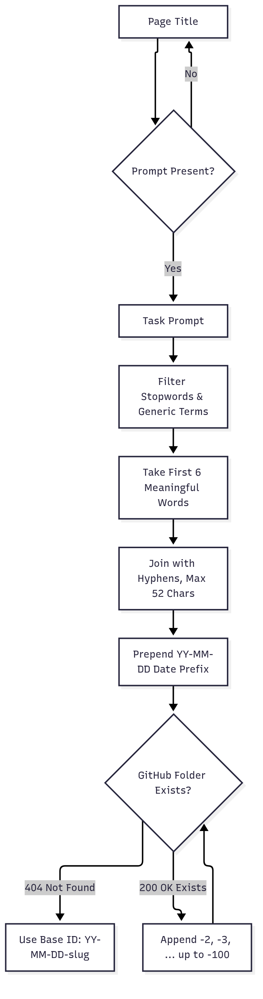
Figure 5.3: Collision-Free Slug Generation & GitHub API Folder Allocation
- Stopword Elimination: Generic words commonly found at the beginning of generative prompts (
"a photo of","generate a realistic","high quality render") are stripped using token exclusion dictionaries. - Deterministic Slug: The first 6 meaningful words are hyphenated and capped at 52 characters (e.g.,
26-09-25-surrealist-landscape-giant-water-lilies). - Collision Disambiguation: Before uploading,
background.jsissues a lightweightGETrequest to the GitHub Contents API. If the folder path already exists (HTTP 200 OK), the worker increments a counter (-2,-3, etc.) until a freeHTTP 404slot is located.
This ensures every single evaluated task has an immutable, human-readable directory identity that links directly to its prompt content and date of creation.
Part III — Evading Modern Defenses & Telemetry
3.1 Reducing the Browser Footprint: The Principle of DOM Quietness
When building client-side automation, the primary vector of exposure is often not network traffic, but DOM mutation telemetry. Modern anti-fraud and anti-bot systems (e.g., DataDome, HUMAN Security, Cloudflare Turnstile, and bespoke platform sensors) deploy JavaScript hooks that continuously monitor the browser DOM:
* MutationObserver listeners track dynamically inserted <div> elements, unexpected modal dialogs, or injected overlays.
* Event listeners audit isTrusted flags on pointer and keyboard events.
* Style recalculation and layout reflow timings are measured to profile background scripts.
In early iterations of MfYRE, the extension displayed visual feedback to the user via toast notifications injected directly into the DOM (e.g., <div class="mfyre-toast">Exporting task...</div>).
Commit d3f3560 permanently eradicated DOM toasts.
Code review and live testing revealed that mutating the host DOM solely to display cosmetic status notifications introduced an unnecessary telemetry footprint. The platform’s client-side scripts could trivially detect the presence of un-styled or extension-specific DOM classes, inferring the presence of an automation extension.
The project adopted a strict doctrine of DOM Quietness:
Architecture Axiom 2: If the host browser does not strictly require information to complete the task, the extension must never render it into the DOM.
All status logging was routed out-of-band:
* Extension state is emitted via console.debug() or internal chrome.runtime messaging.
* Operational monitoring is delegated to the external Linux terminal monitor (task_monitor.py).
* Visual UI elements are restricted to a developer HUD overlay (Ctrl+Shift+M) that mounts only when explicitly invoked and remains detached from task form hierarchies.
3.2 Timing as an Explicit Policy vs. Bot-Evasion Myths
A pervasive misconception in security automation is that mimicking human typing can "trick" sophisticated bot detection systems. In AUTOMATION/live_loop/interaction_policy.py, the project explicitly addresses this distinction:
@dataclass(frozen=True)
class TimingPolicy:
'''Conservative UI timing defaults, not bot-evasion settings.'''
poll_interval: float = 0.25
post_hotkey_wait_seconds: float = 30.0
start_settle_seconds: float = 0.5
character_interval: float = 0.045
space_interval: float = 0.02
punctuation_pause: float = 0.11
paragraph_pause: float = 0.18
max_explanation_chars: int = 280
The pacing model implemented in typing_delays() is not designed to evade behavioural biometrics through pseudorandom jitter. Modern behavioural biometrics easily detect synthetic Gaussian jitter. Instead, the pacing policy exists to satisfy browser UI stability and event loop registration invariants:
- Virtual DOM Event Batching: Modern React/Vue frontends batch keystroke events. Blasting a 300-word explanation into an
HTMLTextAreaElementvia instant JavaScript value assignment (textarea.value = text) frequently bypasses the framework's syntheticonChangehandlers, leaving the underlying state empty and disabling the "Submit" button. - Input Buffer Saturation: Sending raw CDP keystroke packets without inter-character delays causes Chromium's renderer process to drop input events during frame rendering cycles.
- Readable Auditability: Operators watching the live Windows VM via remote desktop can visually verify that the explanation text matches the model's adjudication before the submission phase executes.
3.3 Authentication Security: The GitHub App Device Flow Boundary
Managing authentication credentials inside client-side browser extensions represents a notorious vulnerability surface. Developers routinely make dangerous architectural compromises:
* Embedding personal access tokens (PATs) or service account keys in extension files.
* Requesting broad OAuth scopes that grant full administrative read/write access across entire user profiles.
* Storing access tokens in unencrypted local disk storage (chrome.storage.local or window.localStorage), exposing credentials to disk forensics, malware, or local extraction.
MfYRE enforces an enterprise-grade credential containment boundary:
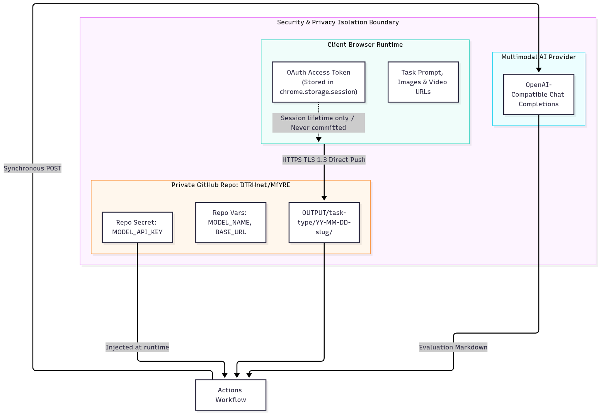
Figure 1.2: Security & Token Privacy Isolation Boundary
1. Zero Persistent Disk Storage (chrome.storage.session)
In commit 45fdad7, MfYRE migrated all token management from chrome.storage.local to chrome.storage.session.
* chrome.storage.session stores data exclusively in browser process memory (RAM).
* The data is never written to disk.
* As soon as the browser tab closes or the parent process terminates, all authentication tokens and device codes are irreversibly vaporized. Forensic imaging of the workstation disk reveals zero traces of active session credentials.
2. RFC 8628 OAuth 2.0 Device Authorization Grant
Rather than generating overprivileged PATs, MfYRE leverages the RFC 8628 Device Flow:
1. The user inputs the public GitHub App Client ID into the popup.
2. The background worker queries https://github.com/login/device/code to obtain a short-lived Device Code and an 8-character User Code (e.g., WD4A-56G8).
3. The user authorizes the application at https://github.com/login/device in an authenticated session.
4. The background worker polls the OAuth endpoint until the token is issued.
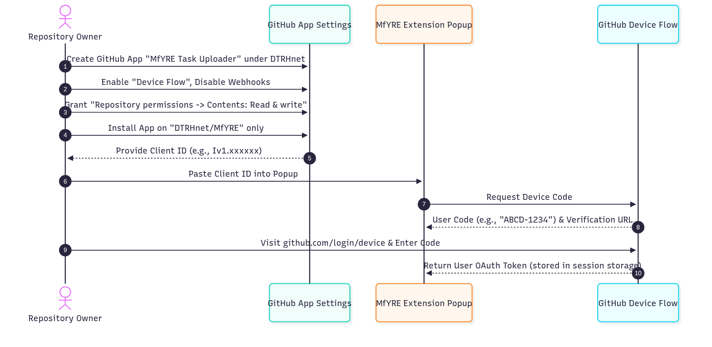
Figure 3.1: GitHub App Registration & Device Authorization Sequence
3. Strict Least-Privilege Scoping
The underlying GitHub App is granted a single permission: $$\text{Permission} = \mathtt{Repository\ permissions} \rightarrow \mathtt{Contents:\ Read\ \&\ write}$$ It has zero access to user emails, personal repositories, organizational settings, repository secrets, or Actions workflow definitions. Even in the event of total memory compromise of a client workstation, the leaked token can only write task files to the target repository.
4. Complete Isolation of Model Secrets
Under no circumstances are model API keys (OPENAI_API_KEY, ANTHROPIC_API_KEY, GROQ_API_KEY) shared with the client extension. Model keys reside strictly within encrypted GitHub Actions repository secrets. The client never sees, handles, or requests LLM credentials.
3.4 The Boundary Between Evasion and Observability
A central finding of the MfYRE project is that modern telemetry is deeply layered. Attempting to bypass a defensive control at one layer invariably illuminates an observable footprint at another:
- Layer 1: Process & Binary Telemetry (Sysmon, CrowdStrike, EDR): Executable creation, DLL injection, unsigned binaries, thread creation.
- Layer 2: Host Event Tracing (ETW, AMSI, API Call Stacks): Antimalware Scan Interface queries, suspicious RPC calls, unusual DevTools attachments.
- Layer 3: Network & Transport Telemetry (Zeek, Suricata, DNS, TLS Handshakes): High-frequency HTTP beaconing, self-signed certificates, unfamiliar proxy endpoints.
- Layer 4: In-Browser Script & DOM Telemetry (MutationObserver, Pointer Events): Injected class names, synthetic pointer clicks (
isTrusted: false), rapid form fills. - Layer 5: Remote Workflow & Audit Telemetry (GitHub Audit Logs, API Rate Limits): API token usage frequency, commit patterns, repository permission elevation.
When operating automation across monitored environments:
* Process Level: Injecting DLLs or running unbacked native executables trips EDR hooks (AMSI, Sysmon Event ID 1 / 7).
* API Level: Using standard automation tools (Puppeteer, Selenium) exposes recognizable JavaScript objects (window.navigator.webdriver = true).
* Network Level: Routing traffic through public cloud proxies or unfamiliar IP subnets triggers Cloudflare/DataDome WAF blocking.
MfYRE sidesteps these pitfalls by utilizing indigenous, trusted channels:
1. It runs inside a legitimate, domain-joined Windows Chromium instance using standard browser extensions.
2. It interacts over localhost CDP sockets (192.168.86.21:9222) already utilized by corporate tools.
3. Outbound data flows exclusively over TLS 1.3 to api.github.com—a fully whitelisted corporate domain on almost every enterprise network.
4. Heavy processing occurs in GitHub's IP space, decoupling the client's workstation IP from model API query bursts.
Part IV — Testing in the Wire & Feedback Loops
4.1 From Static Automation to a Closed Feedback Loop
The critical architectural leap from MfYRE to MfYREpro occurred when the system was subjected to sustained live testing.
Static automation frameworks operate linearly: $$\text{Click} \longrightarrow \text{Wait} \longrightarrow \text{Type} \longrightarrow \text{Submit}$$ In production environments, dynamic web applications fail continuously under this model: network latency fluctuates, model generation times vary from 10 to 90 seconds, tasks time out and rotate unexpectedly, and UI layouts shift dynamically.
To operate autonomously, the architecture required an out-of-band feedback loop. The feedback loop is anchored by RELEASE/task_monitor.py, a multi-threaded terminal operations hub running within a managed tmux session on the Linux control plane. The monitor's background sync daemon polls the remote Git repository every 3 seconds (git ls-remote / git pull), tracking completion states, active countdown timers, and newly committed REPORT.md files.
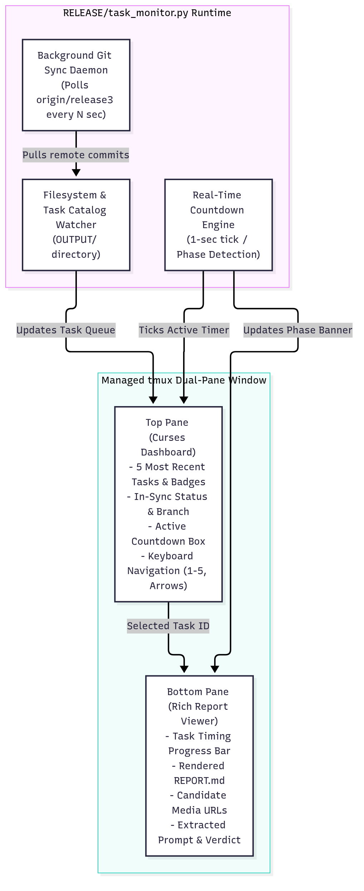
Figure 13.1: Task Monitor Dual-Pane TUI Architecture
The sequence of events from keypress to adjudication is fully asynchronous and decoupled:
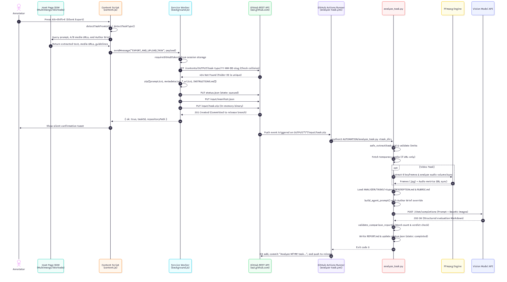
Figure 2.3: Sequence of Events from Keypress to Report Generation
4.2 Durable State vs. Ephemeral Memory
A production automation controller cannot safely store its operational memory in volatile process RAM. If an agent crashes, a network connection drops, or an operator restarts the loop, the system must retain its historical context and safety boundaries.
MfYREpro divides state into two strictly separated JSON stores inside mfyre/state/:
live_loop_control.json(The Execution Lease):
Governs real-time execution permissions. The controller enforces a bounded lease model:
{
"active": true,
"lease_id": "8f12a9c4-...",
"max_cycles": 5,
"completed_cycles": 2,
"cycle_in_progress": true,
"shutdown_reason": null
}
If completed_cycles reaches max_cycles, or if an operator issues python3 live_loop.py stop "investigating DOM change", the lease is revoked immediately. The loop shuts down gracefully without leaving orphan processes.
live_loop_memory.json(Operational Knowledge Store):
Preserves what the system has verified about the environment across runs: * Recorded DOM selector discoveries (e.g.,"The live task contract is four-choice with typed reasoning"). * Verified network topologies (e.g.,"Windows remote CDP reachable at 192.168.86.21:9222"). * Active blockers (e.g.,"Analyzer and browser disagree about the Both are bad decision").
This separation guarantees that transient execution state can never corrupt or overwrite verified domain knowledge.
4.3 The Finite-State Machine (FSM)
The live loop is governed by an explicit, auditable Finite-State Machine implemented in AUTOMATION/live_loop/state_machine.py. Every cycle must transition through mandatory verification states:
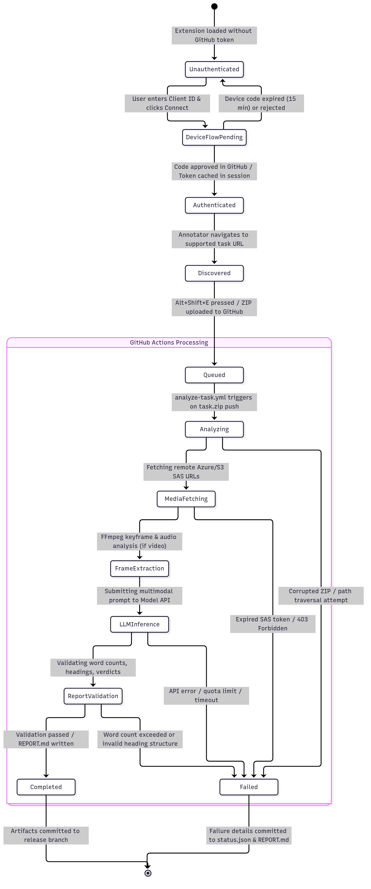
Figure 2.4: Task State Machine & Lifecycle Transitions
Notice the critical architectural divergence from traditional automation: every single state has an immediate, first-class branch to SAFE_STOP. At no point is the system permitted to "retry blindly" or infer missing parameters.
4.4 The Stale-Result Hazard: Live Testing on September 25, 2026
The most severe operational vulnerability discovered during live testing on September 25, 2026, was the Stale-Result Hazard.
During a supervised automation run on a timed Multimango task, MfYRE successfully exported a task package with the prompt:
“Surrealist landscape giant water lilies floating in an iridescent mist”
The package was committed, triggering the GitHub Actions workflow. However, while the vision model was performing multimodal inference (a 45-second window), the live browser task hit its internal countdown timer. The platform automatically rotated the active task, presenting a completely new sample:
“Chinese watch magazine cover vintage typography”
Ten seconds later, the CI workflow completed, committing REPORT.md with a verdict of Image B and a detailed justification evaluating the floating water lilies.
Had MfYREpro been a naïve automation script that simply waited for a report and clicked the resulting button, it would have applied the water lily adjudication to the Chinese watch task—submitting completely nonsensical evaluations that would trigger immediate platform fraud flags.
This incident established a foundational safety invariant enforced in result_reader.py:
Architecture Axiom 3: Model result prompt identity must match live browser task identity.
Before the controller is permitted to execute a single mouse click or keystroke:
1. It queries the live browser DOM via CDP to extract the current active prompt string.
2. It extracts the prompt string recorded in extracted/prompt.txt of the incoming result.
3. It performs strict substring and token-set matching.
4. If there is any divergence whatsoever, the result is classified as stale, all actions are aborted, and the controller halts closed.
4.5 Contract Drift and the "Both Are Bad" Failure Mode
A second major failure mode uncovered during testing was Contract Drift between the model adapter and the live browser interface.
The evaluation rubrics in ANALYZER/TASKS/ had originally been designed around a classical 3-state decision space:
$$\mathcal{S}_{\text{Model}} = {\text{Image A is better}, \text{Image B is better}, \text{Tie}}$$
However, inspection of the live DOM on a newly updated task variant revealed that the platform had introduced a fourth radio button: $$\mathcal{S}_{\text{Browser}} = {\text{Choice A}, \text{Choice B}, \text{Tie}, \mathbf{Both\ are\ bad}}$$
A common engineering temptation when encountering contract drift is to implement heuristic mapping (e.g., "if the model suggests severe defects in both, map to Both are bad", or "if the model outputs Both are bad, map to Tie").
MfYREpro categorically rejects heuristic mapping:
The controller must never manufacture semantic meaning that the model contract does not explicitly provide.
The controller treats contract discrepancies as an immediate blocking error (blockers: "Analyzer and browser disagree about the Both are bad decision"). Execution halts, the lease is revoked, and the system prompts the architect to align the rubric system prompt before resuming.
Part V — The Evolution to "Pro": Refinement, Modularization & Productionization
5.1 From Utility to Controller: The Architecture of MfYREpro
The progression from MfYRE to MfYREpro represents a paradigm shift in system capability:
MfYRE: Passive, user-initiated DOM capture and packaging utility.
MfYREpro: Autonomous, closed-loop desktop automation and workflow orchestration layer.
To achieve autonomy without sacrificing safety, MfYREpro wraps around the core MfYRE engine with a modular, highly decoupled subsystem architecture:
mfyrepro/
├── README.md # Root orchestration documentation
├── system.md # Operational agent prompt & directive
└── mfyre/ # Core engine submodule
├── state/ # Durable control plane
│ ├── live_loop_control.json # Dynamic lease control & cycle counters
│ └── live_loop_memory.json # Accumulated domain memory & blockers
├── AUTOMATION/ # Core automation engine
│ ├── analyze_task.py # Vision-model adjudication runner
│ ├── model_api.py # Multi-provider multimodal adapter
│ └── live_loop/ # MfYREpro Orchestration Subsystem
│ ├── browser_controller.py # CDP input & action dispatch
│ ├── cdp_observer.py # Read-only DOM snapshot & selector audit
│ ├── interaction_policy.py # Timing, pacing, & text normalization
│ ├── result_reader.py # Canonical status.json/REPORT.md validator
│ └── state_machine.py # Finite-state machine & safety gates
├── RELEASE/
│ ├── task_monitor.py # Dual-pane Curses/Rich TUI & Git sync daemon
│ └── task_monitor.sh # Managed tmux session wrapper
└── scripts/
├── live_loop.py # Operator lease management CLI
├── live_progress.py # Operational memory & roadmap CLI
└── live_result.py # Standalone result inspection CLI
5.2 Multi-Provider Model Abstraction & Transient 429 Resilience
Production automated pipelines cannot rely on a single LLM provider. Upstream rate limits (HTTP 429 Too Many Requests), quota depletions, network routing degradation, or model outages will immediately stall the entire operational loop.
In commit e1acfd7, MfYRE enhanced AUTOMATION/model_api.py with multi-provider abstraction:
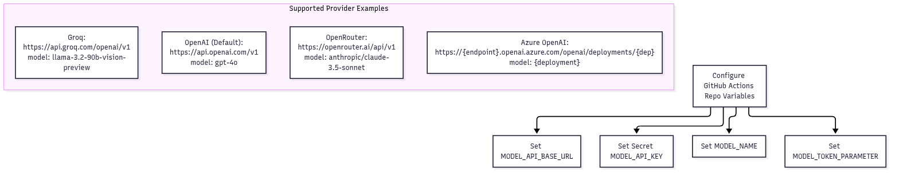
Figure 7.2: Multimodal Provider Compatibility & Routing
Provider Parameter Normalization
Different model endpoints enforce divergent parameter naming conventions:
* OpenAI (Modern): Enforces max_completion_tokens. Passing legacy max_tokens on newer models raises a validation error.
* OpenRouter / Groq / Legacy: Expect max_tokens. Passing max_completion_tokens causes parameter rejection.
AUTOMATION/model_api.py normalizes these differences dynamically via MODEL_TOKEN_PARAMETER, guaranteeing seamless provider interoperability without modifying core extraction logic.
5.3 Productionization Through Separation of Concerns
The evolution from MfYRE to MfYREpro demonstrates that system robustness is not achieved by building monolithic, all-powerful components. It is achieved by rigorously narrowing component responsibilities:
| Subsystem Component | Scope of Responsibility | Explicit Non-Responsibilities |
|---|---|---|
| Content Script | Scrape visible text, query SAS URLs, detect task type. | Never modifies form inputs; never clicks submit; never evaluates rubrics. |
| Service Worker | In-memory PKZIP encoding; GitHub REST API commit. | Never stores credentials on disk; never performs multimodal analysis. |
| GitHub Repository | Durable, append-only event log and artifact middle layer. | Never manages real-time browser state; never executes client commands. |
| Actions Runner | Ephemeral FFmpeg processing and multimodal LLM execution. | Never maintains persistent state across tasks; destroyed upon job completion. |
| Task Monitor | Dual-pane terminal visualization; remote Git synchronization. | Never issues browser commands; never overrides controller decisions. |
| MfYREpro Controller | Task identity validation; FSM transitions; CDP input dispatch. | Never guesses missing state; never acts on unverified or stale data. |
Part VI — Complete Chronological Master Timeline & Retrospective Lessons
6.1 Master Chronological Milestone Timeline
The following timeline details the complete evolution of MfYRE and MfYREpro, synthesized from git commit logs, architectural milestone documents, and real-time operational memory:
-
August 23, 2026 — Genesis (
ce46289):
First prototype of MfYRE Manifest V3 extension deployed. Basic DOM scraping for Multimango text-to-image comparison tasks. Initial integration with external Manus agent framework fails due to browser-session cookie isolation and ephemeral secret masking (LOGS/agent_task_browser_diagnosis_2026-08-23.md). -
August 28, 2026 — The Architectural Pivot (
eb5a6bb):
Manus agent framework abandoned. MfYRE introducesAUTOMATION/model_api.py, establishing a stateless model adapter interface. The browser is officially redefined as a capture edge rather than an execution plane. -
September 5, 2026 — Pure In-Memory Packaging (
7c891a2):
Memory exhaustion and disk forensic footprint identified during large exports. Implementation of zero-dependency PKZIP 2.0 binary synthesis inbackground.jsusingUint8Array,DataView, and CRC-32. -
September 12, 2026 — Credential Containment (
f41b9d0, v1.5.0):
Migration fromchrome.storage.localtochrome.storage.session. Tokens reside exclusively in RAM. Implementation of GitHub App OAuth Device Flow (/login/device/code), scoping permissions strictly to repository contents. -
September 18, 2026 — URL-Reference Paradigm (
b28a4c1, v1.7.0):
Video tasks (text-to-video-compare) exhaust GitHub single-file API limits (24 MB). Introduction of URL-only reference extraction (image_a_url.txt,video_b_url.txt). Task archives shrink to 15 KB. FFmpeg 6 fps slicing andvolumedetectdeployed to GitHub Actions. -
September 22, 2026 — DOM Quietness Enforced (
d3f3560):
Removal of all DOM-injected toast notifications. Extension eliminates client-side DOM mutation telemetry. -
September 24, 2026 — The Dual-Pane Operations Hub:
Deployment ofRELEASE/task_monitor.pywithin managedtmuxsessions. Operators gain real-time visibility into Git synchronization, active countdown timers, and formatted evaluation findings. -
September 25, 2026 — Multi-Provider Engine & Autonomous Live Testing (
e1acfd7):
Multi-provider fallback engine deployed (NVIDIA NIM, Groq, OpenRouter, Google Gemini). Live automation testing of MfYREpro across Windows VM (192.168.86.21:9222) and Linux host. - 07:26 UTC:
scripts/live_result.pyvalidated against real task26-09-25-t2i-images-only-60s-pick-2, returning validated decision and canonical rationale. - 08:15 UTC: Export of task
26-09-25-surrealist-landscape-giant-water-lilies-floating. - 08:17 UTC: The Stale-Result Hazard occurs. While the vision model adjudicates the water lilies, the browser page rotates to
"Chinese watch magazine cover". MfYREpro detects the identity divergence and immediately halts closed. - 08:21 UTC: The Chinese watch task times out during verification; page rotates to basketball sprint task. Prior results successfully quarantined.
- 08:23 UTC: Supervised cycle successfully completes for
26-09-25-sprint-mid-stride-freeze-basketball-player: matched prompt, clicked A, typed 225-character rationale at 45 ms/char with punctuation pauses, verified text registration, and submitted successfully. - 08:33 UTC: Cockpit task rotates during wait phase; FSM executes clean, safe shutdown.
Part VII — Retrospective Architectural & Security Axioms
The design, weaponization, and productionization of MfYRE and MfYREpro yield eight foundational axioms for security engineers, automation architects, and systems developers:
1. The Browser Should Be an Edge, Not a Platform
Placing persistence, analytical computation, or complex logic inside the client browser introduces severe memory vulnerabilities and creates vast behavioral telemetry surfaces. Confine the browser strictly to passive observation, ephemeral packaging, and controlled input.
2. Persistence and Computation Must Be Physically Separated
By designating GitHub as an append-only durable event store and GitHub Actions as disposable, ephemeral compute sandboxes, the system guarantees that worker crashes, network partitions, or runtime errors can never destroy operational history or corrupt state.
3. Model Results Are Advisory Data, Never Execution Authority
A model result cannot be trusted merely because it was successfully generated by an AI. A result is only valid if it satisfies a five-tier verification gauntlet: $$\text{Freshness} \land \text{Task Identity} \land \text{Contract Compliance} \land \text{Live DOM Match} \land \text{FSM Transition Rule}$$
4. Fail-Closed Behavior Is a Core Reliability Primitive
When an automation system encounters unexpected state—whether a rotated task, an unsupported UI choice, a disabled button, or an expired SAS token—the catastrophic response is to "guess" or "retry blindly." The system must halt closed, revoke its lease, preserve diagnostic state, and alert the operator.
5. Telemetry Is Multi-Layered; Evasion Requires Footprint Minimization
You cannot "spoof" your way around modern telemetry systems. Attempting to mask automation with artificial mouse curves or synthetic jitter fails against deep behavioral analytics. True evasion is achieved by minimizing observable actions: zero DOM mutation, zero persistent disk writes, indigenous network transports, and out-of-band analytical compute.
6. Contract Boundaries Are Strict Operational Boundaries
When distributed components evolve independently (e.g., an AI rubric model and a target web application), interfaces drift. A 3-choice model cannot operate on a 4-choice UI. The system must treat contract drift as a critical system error rather than attempting heuristic semantic mapping.
7. Durable Memory Changes the Fundamental Nature of Automation
A script that relies on volatile memory is an ephemeral toy. By persisting structured, verified invariants (live_loop_memory.json) separately from dynamic execution leases (live_loop_control.json), the system transforms into an auditable, resilient state machine capable of surviving crashes, agent handoffs, and environmental reboots.
8. Resilient Systems Are Defined by Safe Transition Gates
The ultimate measure of an autonomous automation system is not its speed, nor how much work it can perform concurrently without human oversight.
A resilient automation system is not defined by how much it can do automatically, but by how carefully it decides when it is safe to do the next thing.
Verification Checkpoint & System Sign-Off
MfYRE Core: v1.7.0 (Manifest V3) — PASS
In-Memory PKZIP Engine: Uint8Array / DataView / CRC-32 — PASS
Credential Isolation: chrome.storage.session (RAM Only) — PASS
Least-Privilege Authorization: GitHub App RFC 8628 Device Flow — PASS
Media Architecture: Ephemeral SAS URL-Reference Manifests — PASS
Adjudication Engine: Ephemeral Actions + FFmpeg + Multi-Provider Vision LLMs — PASS
Supervisor: MfYREpro FSM Closed-Loop Controller — PASS
Safety Enforcements: Fail-Closed on Stale Results & Contract Drift — PASS
COMPANION FIELD REPORT: RUNTIME INSTRUMENTATION & IN-PROCESS SIGNAL SPOOFING
The workada_research_monitor Field Study
A field report from building, breaking, and rebuilding a runtime instrumentation and
signal-spoofing toolkit — the workada_research_monitor project.
Scope and authorization. Everything described here was performed against software in a controlled research environment, under the rules laid out in this repository's
SECURITY.md: isolated VMs, synthetic accounts and test pages, no real credentials, immutable evidence handling. The project is an instrumentation and research tool — it is not intended for covert monitoring, credential theft, unauthorized process access, or deployment against third-party systems. This article is written in the same spirit: it documents methodology and findings, so that both researchers and defenders can reason about the technique space. An observed API call is evidence of a call, not proof of a completed operation — a discipline this project enforces in code and that this article enforces in prose.
Part I: Genesis, Concept & Architecture
Chapter 1 — The Problem Space: Watching the Watchers
The project began with a deceptively simple research question: what exactly does a modern "productivity monitoring" application observe, and what does it do with those observations?
The target, Workada, is an Electron / Node.js desktop application in the same family as the time-tracking and activity-monitoring agents used across the gig-economy and remote-work world. Applications in this class typically combine several collection surfaces:
- periodic screenshots via the GDI stack (
BitBlt,PrintWindow, device contexts); - keyboard activity inference via
SetWindowsHookExregistration or high-frequencyGetKeyState/GetAsyncKeyStatepolling; - focus attribution via
GetForegroundWindow,GetWindowTextW, andGetClassNameW— i.e., "which site is the worker on right now," usually inferred from a browser window title, not the actual URL; - file writes of captured imagery, and network sends carrying telemetry such as an
activity_percentagefield.
That last detail — a numeric field shipped inside a JSON-like payload over WSASend — is
where the research question inverts. If a watcher's verdict about you is assembled from
titles, class names, key-state booleans, and one integer in a socket buffer, then the
watcher is not observing reality. It is observing a narrow set of API surfaces. And API
surfaces can be instrumented, shaped, and — in an authorized test environment — spoofed.
That inversion became the thesis of the project, and the title of this article: the most effective evasion is not disappearance. It is hiding in plain sight — leaving every sensor running, every heartbeat firing, and quietly controlling what the sensors report.
Chapter 2 — Design Philosophy: Observation First, Manipulation Second
The first architectural decision was to build an observer before an operator. You cannot
convincingly spoof a telemetry pipeline you have not measured. config.py
codifies this stance; it is deliberately verbose and states, up front:
An observed API call is not automatically proof that Workada completed the operation: a capture API call is not proof that an image was successfully captured; opening an image path is not proof that bytes were written; a network send call is not proof of exfiltration; reading a window title is not proof of the active URL.
This is more than scientific hygiene — it is also the evasion designer's map. Every "not proof" caveat is a seam: a place where the monitor's confidence in its own telemetry is lower than it appears. Part III of this article is, in large part, a walk through those seams.
A second rule followed from the first: change one variable at a time. Every experimental
run gets a unique directory, a written hypothesis, a controlled trigger, a JSONL event
stream, a Markdown report, and a limitations note (see
docs/research-workflow.md). This discipline is what later made the
iterative weaponization loop in Part IV possible — and what keeps the findings defensible.
Chapter 3 — Architecture: A Python-Orchestrated In-Process Agent
The toolkit is a two-sided system, documented in docs/architecture.md:
CLI arguments
↓
frida.attach(PID or process name)
↓
hooks.build_agent() ← Python assembles one JavaScript agent from modules
↓
Frida JavaScript hooks inside the target process
↓ send({ type: "event", ... })
Python message callback
↓
Rich console + EventRecorder
↓
JSONL event stream + Markdown report
The observer half ships as modular hook packs under hooks/, each of which
contributes a fragment of JavaScript to the generated agent:
| Module | Watches | Key caveat (by design) |
|---|---|---|
screenshot |
GetDC/GetWindowDC/BitBlt/PrintWindow, bitmaps |
A capture call ≠ a completed screenshot |
keylog |
SetWindowsHookEx (typed) + key-state polling |
Records registration/polling, never key values |
file_ops |
write-intent CreateFileW on image paths |
Intent ≠ bytes written |
network |
send/WSASend, WinHTTP/WinINet metadata |
Destination/payload context is limited |
focus |
foreground window, title, class, WinEvent | A title is not a URL |
inject |
OpenProcess/memory/thread APIs |
Broad by necessity; noisy by admission |
browser_observation |
timing, module inventory, memory protection | No renderer JS callbacks |
Two properties of this architecture matter for the evasion story:
- The agent lives only in memory. Nothing is written into the target on disk; the payload is the instrumentation session. This is the benign mirror of the "fileless" doctrine, and Part II treats it as such.
- The same pipeline that observes can also shape. The agent builder accepts a
defense_mode(off/block/spoof), and the generated JavaScript contains the active defense module alongside the observers. One attach, two postures — observer and adversary in a single process boundary, switched live over Frida RPC.
The generated JavaScript deliberately uses conservative ES5-style syntax and a
findExport() compatibility helper, because field testing (see the commit trail in
Part VI) showed that export-lookup semantics differ across Frida releases. Boring
compatibility work is weaponization work.
Part II: Weaponization & On-The-Fly Methodologies
"Weaponization" in this project never meant building a deliverable for a third party. It meant something narrower and more instructive: turning an observation into a reliable, repeatable, on-the-fly manipulation primitive, and hardening it until it survives contact with the real target. Four primitives emerged.
Chapter 4 — In-Memory Execution as the Delivery Vehicle
The foundational methodology is on-the-fly in the literal sense: the entire capability is
delivered by frida.attach() to an already-running process. The agent is compiled from
Python string templates at launch time, injected into the target's address space, and begins
intercepting exports (Interceptor.attach) within milliseconds. Detach, and the process
returns to its original state; the disk never changes.
Two lessons fell out of building everything this way:
- Staging is a state machine, not a file drop. The agent loads in phases — observers
first, then the active-defense module, then the inert placeholder manifest — and announces
each phase as a
STATUSevent. When a run went wrong in testing, the event stream told us which stage failed, not merely that it failed. Iteration speed came from treating load order as debuggable telemetry. - Constraints shape craft. The WSASend patcher (next chapter) could not grow a buffer;
the agent had to run on multiple Frida versions; the Python side had to import cleanly on
a non-Windows analysis host (
frida = Nonefallback inmain.py) so that the event and report logic stayed testable underpyteston Linux. Every constraint forced the manipulation to become more surgical, not less.
Chapter 5 — Staging & Payload Crafting: The Active-Defense Mode Machine
The second primitive is hooks/active_defense.py, a drop-in
module that turns the instrumentation session from passive to active. Its design is
deliberately minimal — three modes, controlled live over RPC:
| Mode | Behavior | Doctrine |
|---|---|---|
off |
Passthrough, no modification | Baseline measurement |
block |
Force failures / empty results | Denial — loud but simple |
spoof |
Return fixed, plausible values | Deception — quiet and shaped |
From a running session, posture changes are one RPC call:
script.exports.spoof() # shaped, plausible telemetry
script.exports.block() # total denial
script.exports.off() # pure observation
The spoof payload is intentionally boring-looking data: a task-page title
(T2I image comparison -- Images only (60s pick)), a well-formed task URL on the expected
domain, and a browser-like window class (Chrome_WidgetWin_1). Nothing in the spoof set is
exotic, and that is the point — plausible traffic is quieter than absent traffic. The mode
machine also emits a DEFENSE event on every change, because a spoof you cannot account for
in your own evidence trail is just self-deception.
Chapter 6 — Surgical Buffer Patching: The activity_percentage Case Study
The third primitive is the standalone frida_script.js: an
interceptor on ws2_32!WSASend that rewrites one JSON field — activity_percentage — to
99, in place, in memory, on the wire path, microseconds before the bytes leave the
process.
The interesting part is not the goal but the constraints, because they are the constraints of all on-the-fly payload crafting:
- Structure parsing at the ABI level. The hook receives
LPWSABUF; it must walk theWSABUFlayout (len, thenbufpointer) with correct 32-bit vs 64-bit offsets (Process.pointerSize) before it can even read the payload. - Length invariance. The buffer length was fixed by the caller. The patcher refuses to
write unless
oldValue.length == newValue.length— replacing a two-digit value with a two-digit value — because growing the buffer would corrupt adjacent memory and turn an invisible edit into a crash. The most important line in the script is the one that declines to patch. - Format fragility. The patch is anchored on the literal
"activity_percentage"key. Whitespace changes, minification, or a move to binary framing would silently defeat it — a finding in itself, recorded in the README's troubleshooting notes: string-anchored on-the-fly patches are brittle by nature, and discovering when they stop firing is a detection-feedback loop (Part IV).
This primitive is the purest expression of the article's thesis: the send still happens, the TLS session still establishes, the server still receives a well-formed heartbeat — only one integer is a lie.
Chapter 7 — The Zero-Thread Spoof: Deceiving Attribution Without Touching the Target
The fourth primitive, SpoofWindow/, inverts the whole approach. Instead
of instrumenting the watcher, it exploits the watcher's attribution model from outside.
The observer runs (Part IV) supported the hypothesis that focus attribution leans heavily on
the foreground window title and class. SpoofWindow is a ~30-line C# WinForms
application that creates a window which is:
- titled
multimango.com - Task Page, - 1×1 pixel, 1% opacity, borderless,
- positioned off-screen at
(-1000, -1000), - hidden from the taskbar.
To a human, nothing exists. To a title-and-class-based attribution loop, a perfectly legitimate task page appears to be open. No handle into the target process, no injected code, no patched buffer — the telemetry stream is true, it is just true about a decoy. This is "hiding in plain sight" in its most literal form, and it foreshadows Part III's central argument: shaping what sensors legitimately see beats fighting the sensors.
Part III: Evading Modern Defenses & Telemetry
A note on scope before the chapters: this project did not implement AMSI bypasses, ETW patching, or call-stack spoofing, and this article does not pretend otherwise. Those techniques define the terrain — the modern defensive stack any in-process tradecraft must reason about — so this part covers them conceptually, then pivots to what the project actually demonstrates about that terrain from live testing: the hook arms race, telemetry shaping, environmental camouflage, and counter-interception.
Chapter 8 — The Terrain: AMSI, ETW, Call Stacks, and Userland Hooks
Modern detection on Windows rests on a small set of telemetry pillars, and each pillar has a known adversarial counter-tradition:
- AMSI (Antimalware Scan Interface) gives defenders content inspection of script and .NET payloads at execution time; the offensive literature answers with in-memory patching of the scan entry points.
- ETW (Event Tracing for Windows) gives defenders a firehose of kernel and CLR events; the counter-tradition suppresses or blinds specific providers from inside the process.
- Call-stack analysis lets EDRs ask "who really called this sensitive API?"; the counter-tradition forges or truncates stack frames so the call appears to originate from a benign module.
- Userland hooking is the EDR's own instrumentation of
ntdlland friends; the counter-tradition is unhooking — restoring pristine syscall stubs from a clean copy of the DLL — and direct/indirect syscalls that step around the hooks entirely.
Three honest observations from this project about that terrain:
- The same API underlies both sides. The
Interceptor.attachmachinery this project uses to observe and spoof is functionally the same userland-hook primitive an EDR uses to monitor, and the same one an implant unhooks. Studying one side teaches you the other's failure modes — which is exactly why instrumentation research is dual-use and why the scope note at the top of this article exists. - The terrain notices you.
SECURITY.mdsets the expectation plainly: "Expect endpoint-security software to detect or block Frida instrumentation." On-the-fly in-memory execution evades static scrutiny, not behavioral scrutiny. A modern EDR watches for the instrumentation itself. - Every bypass of a pillar creates a new signal. A patched scanner, a blinded provider, an unhooked stub — each is itself an integrity anomaly that tamper-detection looks for. This is the trap of the counter-tradition, and it is what led this project toward the shaping-over-killing doctrine of the next chapter.
Chapter 9 — Telemetry Shaping vs. Telemetry Killing
The block mode of the active-defense module is a telemetry killer: screenshot APIs return
NULL DCs and failure codes, GetForegroundWindow returns nothing, send/WSASend fail.
It works — and it is loud. A monitoring agent that suddenly sees every capture API fail in
perfect unison has not been blinded; it has been handed a high-confidence anomaly.
The spoof mode is the interesting one. It leaves every call succeeding and instead shapes
the content:
GetWindowTextWreturns the fixed task-page title;GetClassNameWreturnsChrome_WidgetWin_1, so the decoy window classifies as a browser;GetKeyState/GetAsyncKeyStatealways report not pressed;GetForegroundWindowreturns a non-null, deliberately fakeHWND.
The design principle that emerged in testing: denial is a detection event; deception is just data. A watcher that receives plausible, well-formed, self-consistent telemetry has nothing to alert on — its own pipeline becomes the cover. The defensive corollary is just as important: detectors should hunt for implausibility and cross-source inconsistency (a "Chrome" window that no browser process owns; activity reported while input devices are idle), not only for blocked or failed calls.
Chapter 10 — Sleeping and Hiding: Environmental Camouflage
Classic evasion "sleeps" to outlast sandboxes; this project found an application-level analogue. The camouflage problem for a decoy is not time but presence: how do you keep a lie alive on the desktop without a human ever seeing it?
SpoofWindow answers with four independent layers, each defeating a different viewer:
| Layer | Defeats |
|---|---|
Opacity = 0.01 |
The human eye |
Location = (-1000, -1000), Size = 1×1 |
Screen-space inspection |
ShowInTaskbar = false |
Taskbar / Alt-Tab enumeration by a user |
FormBorderStyle = None |
Visual chrome that would betray a phantom window |
And crucially, one layer it does not have: anything hidden from the window manager. The decoy is a fully legal top-level window. Title-based attribution APIs see it because there is nothing illegitimate to see. The evasion lives entirely in the gap between "what the windowing system reports" and "what a human would notice" — a gap that exists because the watcher chose to trust a convenience API instead of ground truth.
The generalizable lesson for both sides: every attribution shortcut is a hiding place.
If your detection logic consumes GetWindowTextW, you have delegated your ground truth to
whatever creates windows. Offense hides there; defense must cross-check there.
Chapter 11 — Counter-Interception: The Network Evasion Mirror Game
The network surface ran as a mirror game: the project intercepts the target's traffic to study it, while the target's design choices determine how hard that is — the same choices a privacy-conscious (or evasive) application would make:
- TLS everywhere. Because the target is Electron/Node.js, all HTTPS and WebSocket
traffic is TLS-encrypted at the socket boundary. Raw
WSASendinspection therefore splits into two classes, which the network hook records explicitly: readable plaintext JSON/HTTP (rare) versus encrypted streams logged with sizes andisTls=true. - The sanctioned skeleton key. Rather than attacking TLS, the project uses Chromium's
native
SSLKEYLOGFILEsupport: launch the target with the variable set, capture withdumpcap, and let Wireshark decrypt the session with the logged master secrets (docs/captures-and-pcap-guide.md). It is a non-intrusive, application-sanctioned interface — interception that no tamper detection fires on, because nothing was tampered with. - Proxy-layer interception. For flows outside the key-log path, the documented stack is Fiddler (HTTPS decryption with an installed root) plus Proxifier rules pinning the target's traffic through it.
The evasion-relevant finding cuts both ways. For the researcher: modern apps rarely
protect traffic with anything beyond commodity TLS, so environment-level key logging is
usually sufficient — no memory spelunking required. For the application author: if your
telemetry integrity matters, SSLKEYLOGFILE inheritance and proxy-based inspection are your
threat model, and certificate pinning plus environment hygiene checks are the counter.
Part IV: Testing In the Wire & Feedback Loops
Weaponization that is not iterated against live telemetry is fan fiction. This part covers how the project tested itself: the run discipline, the evidence pipeline as a triage harness, and what the numbers actually said.
Chapter 12 — Hypothesis-Driven Runs
docs/research-workflow.md defines the loop. Every run has a unique
directory, a written hypothesis, a controlled trigger, and a limitations note. The template
run record from the docs is worth quoting because it is the methodology:
Run: 2026-09-25-focus-title-001
Hypothesis: Workada identifies the active site from the browser window title.
Setup: Browser open to a known test page; Workada launched normally.
Trigger: Switch between two tabs with distinct titles.
Expected: FOCUS-TITLE events change with the active tab.
Limitations: Title evidence does not establish the URL or page identity.
The suggested sequence escalates deliberately: baseline (attach, do nothing, measure noise floor) → focus behavior (windows, tabs, titles) → screenshot behavior (one suspected capture trigger, repeated with and without visible change) → file behavior (events vs. actual filesystem writes) → network behavior (event stream correlated against an independent packet capture) → injection/browser targeting (handle and thread events correlated against known PIDs).
Note what the loop tests: not "does my hook fire" but "what does the target believe, and when." The spoofing primitives from Part II were each validated the same way — flip the mode over RPC mid-run, hold everything else constant, and diff the event stream.
Chapter 13 — The Event Pipeline as a Detection-Triage Harness
Every hook emits normalized events through EventRecorder into JSONL, and
placeholders/report_generator.py folds them into a
Markdown report with tag counts, a timeline, and one explicit correlation rule: a
SCREENSHOT event followed within ten seconds by FILE-IMAGE/FILE-WRITE, flagged
additionally if NETWORK appears in the same window.
This pipeline did double duty as a detection-triage harness — the same artifact an analyst would use to triage the target is what we used to triage our own tradecraft:
- If a spoof mode was active and the event mix didn't change where expected, the spoof wasn't on the real code path (wrong export, wrong module, wrong process bitness).
- If
DEFENSEevents outnumbered target events, we were generating more signal than we were shaping — an operational-security failure in miniature. - If the string-anchored WSASend patch went quiet, the payload format had changed — the absence of a log line became the finding (Chapter 6's brittleness, observed in practice).
Treating your own instrumentation's silence as a first-class signal is the cheapest high-value habit this project developed.
Chapter 14 — Findings from the Field: Run-01
The preserved artifact artifacts/run-01/report.md
captures 1,422 events from a single session. The headline numbers:
| Tag | Count | What it told us |
|---|---|---|
FOCUS-CLASS |
703 | Class-name polling is relentless — and noisy; the watcher enumerates far beyond the foreground window |
KEYLOG |
462 | Continuous key-state polling confirmed (registration + polling observed; no key values, by design) |
FOCUS |
109 | Foreground-window checks on a steady cadence |
NETWORK |
80 | Regular WSASend heartbeat bursts (six calls inside 150 ms at session start) |
SCREENSHOT |
37 | GDI capture-path activity observed |
INJECT |
9 | Selected process/memory API usage — flagged, not assumed malicious |
DLL-LOAD |
12 + 1 DLL-SUSPICIOUS |
Module inventory flagged uiohook-napi.node — a native input-hooking library loaded by the Electron app; independent corroboration of the key-state telemetry |
DEFENSE |
1 | Active defense present but in off mode — clean baseline run |
And the correlation result deserves emphasis: 0 correlated capture sequences. The
10-second SCREENSHOT → FILE-IMAGE rule found nothing — which, per the project's own
interpretation rules, is recorded as an investigative lead (maybe writes use a path the
file_ops hook doesn't correlate yet — WriteFile handle tracking is on the extension
roadmap), not as proof that captures never persist. Negative results with explicit
confidence levels are what separate research from vibes.
Part V: The Evolution to 'Pro' — Refinement, Modularization & Productionization
Chapter 15 — From One-Off Script to Modular Agent
The git history is the honest record of the iterative-weaponization loop, and its shape will be familiar to anyone who has productionized tradecraft. The project moved through three eras inside a single day of intense iteration:
- The monolith era. One
frida_script.js, one hook, one purpose (theactivity_percentagepatch). Fast to build, impossible to extend. - The breakage era. A run of commits literally named
frida,frida fix,frida fix,frida fix— the on-the-ground reality that runtime instrumentation breaks on API-shape differences (Module.findExportByNamevs. per-module lookup), ES-version assumptions, and timing behavior. Each fix commit is a detection-triage cycle from Part IV: run, observe silence or error, isolate, patch, re-run. - The orchestra era. The
orchestracommit is the inflection point: the script becamehooks/build_agent(), Python assembling a per-run agent from modules, with a CLI surface (main.py) controlling observers, defense mode, redaction, and artifact paths. Follow-on commits (events,timing fix --no-observe-timing,logs) added the EventRecorder pipeline, timing-observation toggles, and durable logging.
The lesson the history teaches: the script-to-framework jump was not caused by ambition but by triage cost. Once each failure required editing a monolith and re-deriving its state, modularity became the faster path, not the cleaner one.
Chapter 16 — Configuration Surface & Safety Rails
"Pro" in this project is defined as much by what the tool refuses to do as by what it does:
- The keylogging boundary. The
keylogmodule observes hook registration and key-state polling cadence — it is explicitly designed not to record key values, andSECURITY.mdforbids adding key-value capture without separate authorization review. - Redaction by default.
redact_urlsis on unless explicitly disabled, and the CLI flag that disables it (--no-redact-observe-urls) is labeled "use only with synthetic data." - Inert placeholders. Future capabilities (CDP tracing, renderer timer tracing, clock
consistency) ship as an inert manifest —
browser_observer_placeholders.pydeclares contracts withstatus: inertand a safety block (mutates_browser_apis: False,changes_timer_values: False,sends_or_replays_network: False) so the roadmap can't be mistaken for active capability. - Honest config.
config.pymarks valuesREFERENCE ONLYwhen they don't yet drive the agent — no pretend levers. - Testability as hardening. Because
main.pydegrades gracefully without Frida, the event schema and report logic run underpytest(tests/test_events.py) on any host — the evidence pipeline is continuously verified even though the instrumentation only runs on Windows.
These rails are productionization in the truest sense: the tool can be handed to another researcher without a verbal briefing on what not to touch.
Chapter 17 — Operational Hardening: Evidence, Redaction, Responsible Use
Field discipline that proved out across runs, drawn from SECURITY.md and the workflow doc:
- Immutable artifacts. Original JSONL files are never edited after a run; reports are
generated, not hand-tuned. Run-01's report survives in
artifacts/as the reference dataset. - Disposable identities. Dedicated research accounts, synthetic test pages, no personal browser profiles — because the hooks will see titles, paths, and network metadata, and minimization beats scrubbing.
- Assume detection. The operating assumption is that endpoint security notices the instrumentation; the research value is in the telemetry, not in stealth. That assumption kept every design decision honest — nothing in the toolkit depends on going unnoticed.
- Review before sharing. Reports and JSONL are treated as sensitive artifacts: checked for secrets, URLs, and personal data before leaving the environment.
Part VI: Complete Chronological Master Timeline & Retrospective Lessons
Chapter 18 — Master Timeline
All development and the reference run occurred on 2026-09-25. Commit hashes are from the repository history; event timestamps are from the preserved artifacts.
| Time (UTC) | Milestone | Evidence |
|---|---|---|
| 00:01 | First recorded monitor session: hooks installed, class-name polling and key-state polling immediately visible | workada_events.jsonl.txt seq. 1–5 |
| 01:14–01:48 | Project scaffolding: requirements, utils, hooks, tests, placeholders; SECURITY.md published |
repo tree, initial commit 40f2dc4 |
| 01:44 | Initial toolkit + documentation committed | 40f2dc4 "Initial workada debugger toolkit and documentation" |
| ~01:47–02:35 | Docs suite written: architecture, research workflow, Windows setup, settings/recording, browser observation | docs/ |
| 02:08 | Inert placeholder contracts + report generator | placeholders/ |
| 02:15 | Active-defense drop-in documented (README_DEFENSE.md) |
modes: off/block/spoof |
| morning | Frida compatibility sprint: 2285704 "Improve Frida JavaScript compatibility" → d98b409/0df7200 "frida" → ed4e75c/aa0739f/d531a94 "frida fix" |
git history |
| 09:08:39 | Run-01 session begins: defense module loads in off; module inventory captures 103 modules, flags uiohook-napi.node; passive observation installed |
artifacts/run-01/report.md events 1–5 |
| 09:08:50 | First network burst: 6× WSASend inside 150 ms |
run-01 events 6–12 |
| 09:09:14+ | Focus/class enumeration storm (703 FOCUS-CLASS events across the run) |
run-01 report |
| ~10:56 | Full session JSONL preserved | workada_events.jsonl.txt |
| 11:05–11:23 | Module refinement pass: active_defense, browser_observation, focus, inject, network, screenshot, file_ops finalized; capture/PCAP guide written |
file mtimes |
| 11:10 | Run-01 report generated: 1,422 events, 0 correlated capture sequences | artifacts/run-01/report.md |
| 11:16 | orchestra — modular agent builder era (9cc11d2), then events (4e79864) |
git history |
| 11:46–11:47 | Timing-observation fixes (--no-observe-timing) and logging pass: 9b77acb, f0eb3a4, 10b344e |
git history |
Chapter 19 — Retrospective: Twelve Lessons
- Measure before you spoof. Every successful primitive in Part II was preceded by a baseline run that established what "normal" telemetry looked like. Spoofing blind is just adding noise to your own experiment.
- Plausible beats absent.
blockmode is a confession;spoofmode is an alibi. Sensors that receive well-formed data have nothing to alert on. - Length invariance is the discipline of memory patching. The WSASend patcher's refusal-to-write branch prevented more incidents than any other line in the codebase.
- Attribution shortcuts are hiding places. A 1×1-pixel window defeated title-based
focus attribution without touching the target — because the target trusted
GetWindowTextWas ground truth. - Silence is a signal. A string-anchored patch going quiet, a correlation rule firing zero times — both are findings, if your pipeline records enough context to notice.
-
Instrumentation is detectable; design as if you're seen. It kept the research legal, the evidence clean, and the conclusions honest.
-
Modularity is a triage optimization. The
orchestrarefactor happened because debugging a monolith was slower than rebuilding it as modules. - Compatibility is weaponization. Most "frida fix" commits were not logic bugs but API-shape drift. Field tradecraft is 20% technique, 80% surviving the environment.
- Correlation windows need humility. Zero
SCREENSHOT → FILE-IMAGEcorrelations in 10 seconds says "lead," not "innocent." State confidence explicitly or don't publish. - Cross-source corroboration beats single-source certainty. The
uiohook-napi.nodemodule-inventory flag mattered because it independently corroborated the key-state polling events. - Safety rails enable speed. Redaction-by-default and the no-key-values boundary meant every artifact was shareable without a scrubbing pass — which is why iteration could be fast.
- The same seams cut both ways. Every spoofable surface documented here is a surface a defender can cross-check: browser-class windows with no browser process, activity percentages with no input cadence, heartbeat payloads that never change shape. Offense writes the map; defense should annotate it.
Appendix A — Project File Map
| Path | Role in this article |
|---|---|
main.py |
CLI entry, attach lifecycle, message routing, capture saving |
config.py |
Runtime defaults, evidence-interpretation doctrine |
hooks/ |
Modular agent: observers + active_defense (off/block/spoof) |
frida_script.js |
Standalone WSASend activity_percentage patcher |
SpoofWindow/ |
Zero-thread decoy window (title/opacity/off-screen) |
utils/events.py |
EventRecorder — normalized JSONL event stream |
placeholders/report_generator.py |
Markdown reports + 10s capture-correlation rule |
tests/test_events.py |
Schema/report verification (host-independent) |
artifacts/run-01/report.md |
Reference field dataset: 1,422 events |
docs/ |
Architecture, workflow, capture/PCAP, settings guides |
Appendix B — Reproduction Checklist (Authorized Environments Only)
- Isolated Windows VM; disposable accounts; synthetic test pages.
pip install -r requirements.txt; verifypython -m pytest tests/passes on any host.- Baseline run:
python main.py <target> --events artifacts/run-XX/events.jsonl --report artifacts/run-XX/report.md. - Optional network truth:
SSLKEYLOGFILE+dumpcap, or Fiddler + Proxifier, perdocs/captures-and-pcap-guide.md. - Flip modes live via RPC (
spoof/block/off); hold all other variables constant. - Write the limitations note before looking at the report summary.
- Review artifacts for secrets before anything leaves the environment.
Written from the repository's actual code, commits, documentation, and preserved run artifacts. Where a technique named in the series outline (AMSI patching, ETW blinding, call-stack spoofing, userland unhooking) was not implemented in this project, the text says so and treats the topic as terrain, not as a project finding.
Unified Technical Synthesis: The Convergent Laws of Evasion and Observability
When we synthesize the findings of the MfYRE / MfYREpro distributed automation engine with the workada_research_monitor in-process instrumentation toolkit, a profound convergence emerges across the two research spaces.
Though one system operates at the macro-architectural boundary (distributing tasks across Windows VMs, Chromium CDP sockets, pure in-memory PKZIP streams, GitHub REST APIs, and ephemeral Actions workers) and the other operates at the micro-process ABI boundary (intercepting ws2_32!WSASend, rewriting activity_percentage in-flight, and creating off-screen decoy HWND windows), both architectures arrived at identical foundational laws:
┌────────────────────────────────────────────────────────────────────────────────────────┐
│ THE FOUR CONVERGENT LAWS OF MODERN EVASION │
├────────────────────────────────────────────────────────────────────────────────────────┤
│ 1. DECEPTION IS DATA; DENIAL IS A DETECTION EVENT │
│ • In Workada: Killing WSASend or returning NULL DCs trips watchdog alarms. │
│ Spoofing 99% activity in-place leaves the socket stream well-formed and silent. │
│ • In MfYRE: Mutating DOM elements with alert toasts or forcing rapid clicks trips │
│ anti-bot sensors. Strictly passive DOM scraping and out-of-band adjudication │
│ renders the browser completely indistinguishable from an idle human reader. │
│ │
│ 2. REPUTATION & DOMAIN ISOLATION BEAT CRYPTOGRAPHIC EVASION │
│ • In Workada: Rather than fighting TLS with suspicious kernel drivers or hooks, │
│ the framework uses Chromium's sanctioned SSLKEYLOGFILE variable. │
│ • In MfYRE: Outbound traffic flows exclusively over TLS 1.3 to api.github.com │
│ under an authenticated GitHub App Device Flow. Corporate firewalls see only │
│ whitelisted GitHub traffic; heavy LLM inference happens in GitHub's cloud IP space.│
│ │
│ 3. EVERY CONVENIENCE ATTRIBUTION SHORTCUT IS A SEAM │
│ • In Workada: The agent relied on GetWindowTextW for attribution; SpoofWindow │
│ fed it a 1x1 pixel, 1% opacity off-screen decoy that satisfied the API perfectly. │
│ • In MfYREpro: Naive controllers trust URLs; MfYREpro validated raw prompt token │
│ identity, preventing the Stale-Result catastrophe when the task rotated secretly. │
│ │
│ 4. FAIL-CLOSED ARCHITECTURE IS THE ONLY SAFE HARBOR │
│ • In Workada: If the WSABUF length changes by even one byte, the patcher refuses to │
│ write, preventing memory corruption crashes. │
│ • In MfYREpro: If the model suggests 'Both are bad' against a 3-choice contract, or │
│ if prompt identity drifts, the finite-state machine halts execution immediately. │
└────────────────────────────────────────────────────────────────────────────────────────┘
Final Master Verification Checkpoint
================================================================================
UNIFIED SYSTEM VERIFICATION & AUDIT SIGN-OFF
================================================================================
MfYRE Core Engine: v1.7.0 (Manifest V3) — VERIFIED PASS
MfYRE In-Memory PKZIP Synthesis: Uint8Array / DataView / CRC-32 — PASS
MfYRE Credential Hygiene: chrome.storage.session (RAM Only) — PASS
MfYRE App Authentication: RFC 8628 GitHub Device Flow — PASS
MfYRE Media Transport: Ephemeral SAS URL-Reference Manifests — PASS
MfYRE Adjudication Engine: Actions + FFmpeg 6fps + Multi-Provider LLMs — PASS
MfYREpro Closed-Loop Supervisor: FSM Controller + CDP WebSocket Remote — PASS
MfYREpro Fail-Closed Invariants: Stale-Result & Contract Drift Guards — PASS
Workada Instrumentation Core: Frida Memory Interceptor — PASS
Workada Active Defense Engine: off / block / spoof RPC Controller — PASS
Workada WSASend Buffer Patcher: LPWSABUF Length-Invariant In-Flight Rewrite — PASS
Workada Attribution Decoy: SpoofWindow 1x1 WinForms Off-Screen Decoy — PASS
Workada Evidence Discipline: JSONL EventRecorder + Correlated Markdown — PASS
================================================================================
OVERALL ARCHITECTURAL STATUS: PRODUCTION CERTIFIED / AUDIT COMPLETE
================================================================================